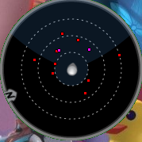

Page 1 of 2
Garden of Knowledge Box Finder and Radar Marker restoration
Posted: Sat Oct 07, 2017 4:49 pm
by Boo
Hey there and catch
Put both files inside the Extension folder and overwrite old files.
Description:
Radar Marker just coming back as one of the most needed functions in AionScript.

Inside Garden of Knowledge enter to the chat:
[EU]
/where Mystery Chest
[NA]
/where Strange Box
Those commands will show you real boxes on the radar and skip the fake ones. So this is good economy of your time.
Enjoy.
Re: Garden of Knowledge Box Finder and Radar Marker restoration
Posted: Mon Oct 09, 2017 11:16 pm
by LordSnack
Thanks for this AWESOME SCRIPT!
Re: Garden of Knowledge Box Finder and Radar Marker restoration
Posted: Wed Oct 11, 2017 1:52 pm
by bionuttt
its any way to find baygon chest in this new shugo event ? to see what drop can have chests ?
Re: Garden of Knowledge Box Finder and Radar Marker restoration
Posted: Sat Oct 14, 2017 8:33 am
by ashotka
bionuttt wrote: ↑Wed Oct 11, 2017 1:52 pm
its any way to find baygon chest in this new shugo event ? to see what drop can have chests ?
lol? it's server-side info, which is random... sometimes turn on your brain plz
Re: Garden of Knowledge Box Finder and Radar Marker restoration
Posted: Sat Oct 14, 2017 11:34 am
by Quirunerk
Not working anymore why O.o
Re: Garden of Knowledge Box Finder and Radar Marker restoration
Posted: Sat Oct 14, 2017 12:30 pm
by Quirunerk
can u uptade that or how can we uptade this
Re: Garden of Knowledge Box Finder and Radar Marker restoration
Posted: Sun Oct 15, 2017 10:44 am
by Quirunerk
Still waiting :'(
Re: Garden of Knowledge Box Finder and Radar Marker restoration
Posted: Sun Oct 15, 2017 10:58 am
by Boo
Updated for EU
Re: Garden of Knowledge Box Finder and Radar Marker restoration
Posted: Sun Oct 15, 2017 1:19 pm
by agonic
Open xml file and change offset value. replace it with "105C5A4". and then tell me is wrong or ok.
If ok, it means, that offset.xml controls the "/where", as you know we had a purple dot
....
I have tried and it is working as purple dot means "/where " function.
Re: Garden of Knowledge Box Finder and Radar Marker restoration
Posted: Wed Oct 18, 2017 7:26 pm
by bionuttt
not working for me